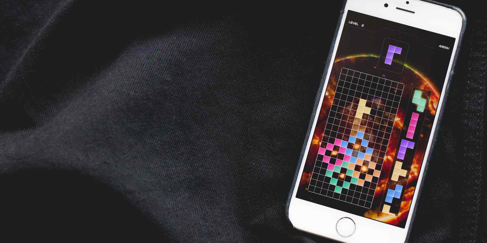

Tetra Fire
iOS App
Igniting a classic with a new twist
A high-framerate puzzle arcade game that combines classic falling block mechanics with dynamic particle animation systems emulating natural elements (fire, rain, smoke, explosions). Features 15 progressive levels, multiple game modes, and custom particle physics.